@Tasnimnews_Fa
📝 原文: Masoud Jafari Jozani: "Loving" is not a complete word for affection toward the homeland.
🇨🇳 译文: Masoud Jafari Jozani：“爱”并不是一个完整的词来表达对祖国的感情。

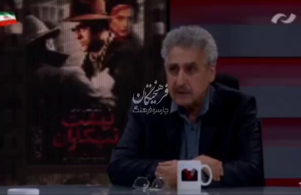
🕒 2026-04-24T20:53:15+00:00


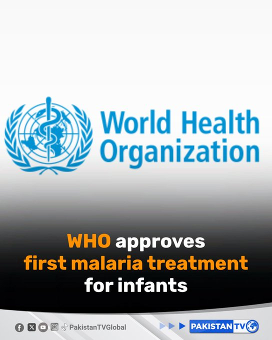

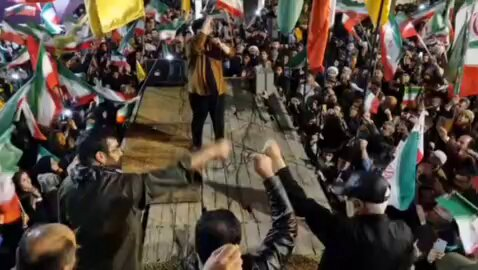
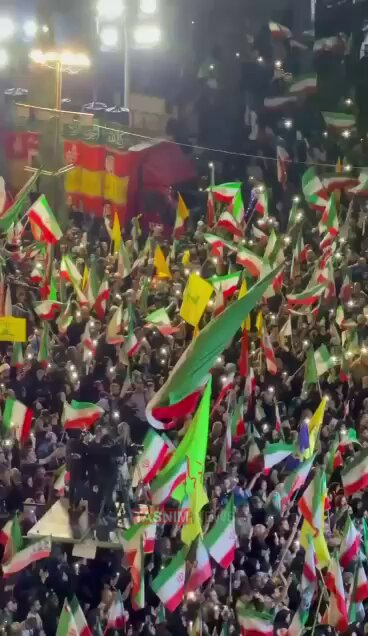
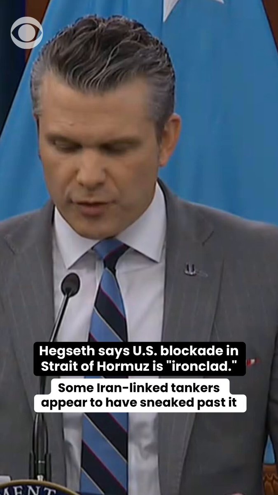
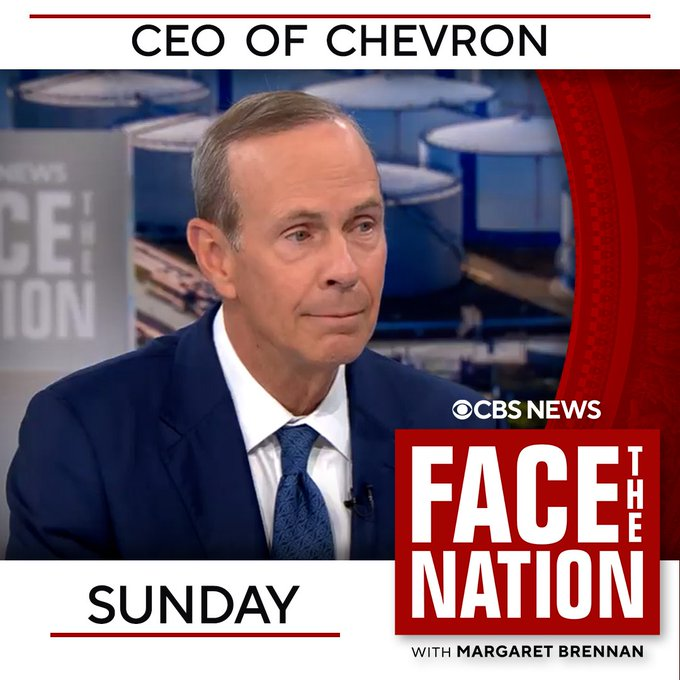
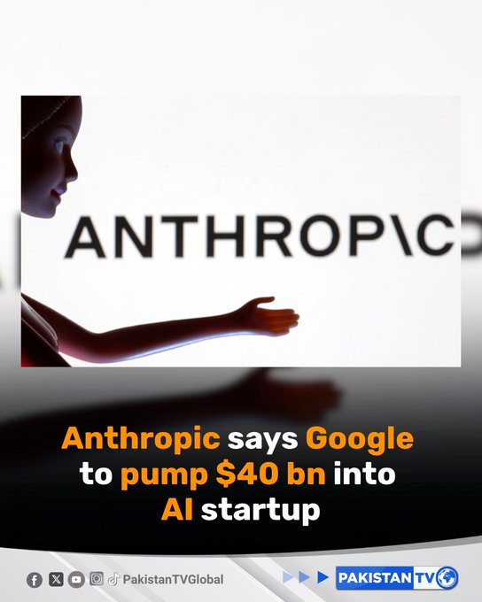


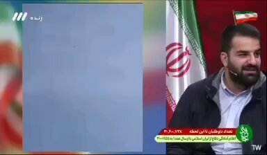


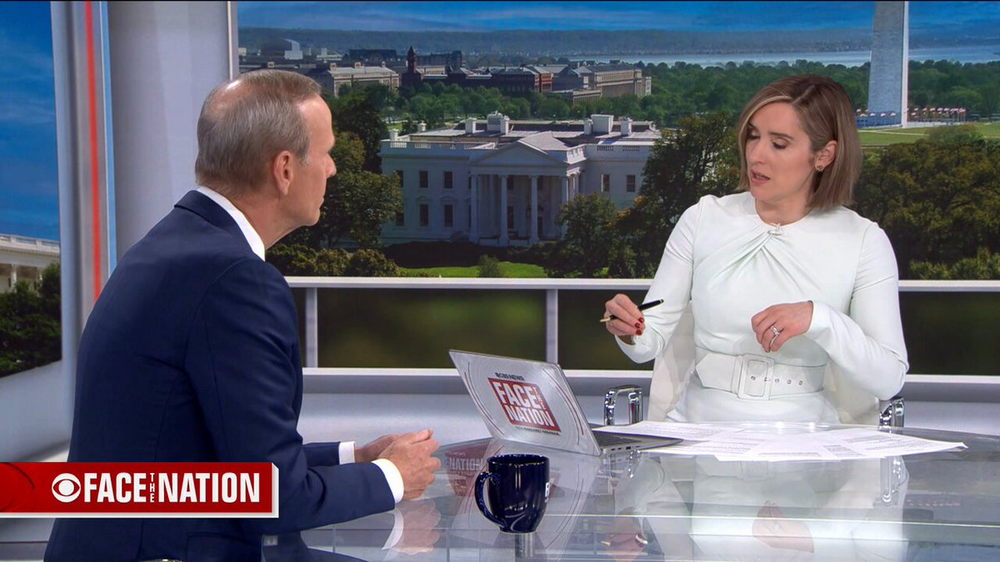
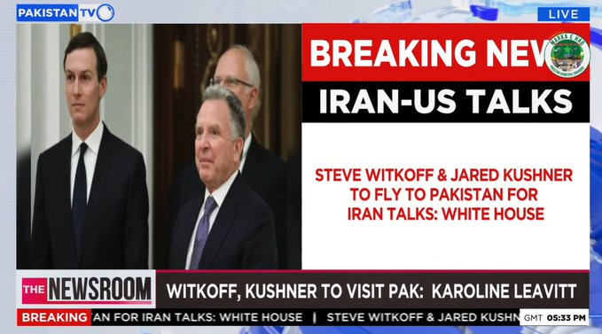

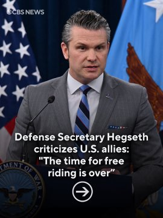
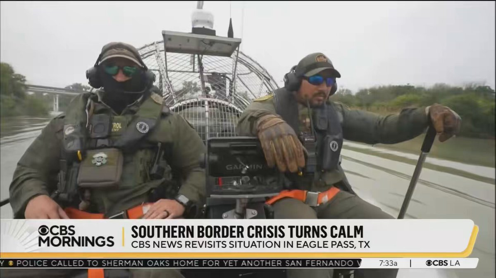
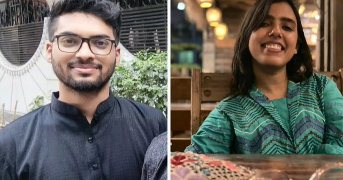
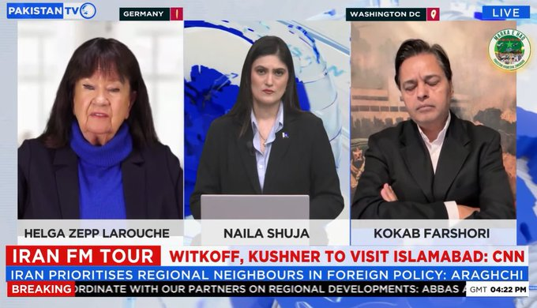
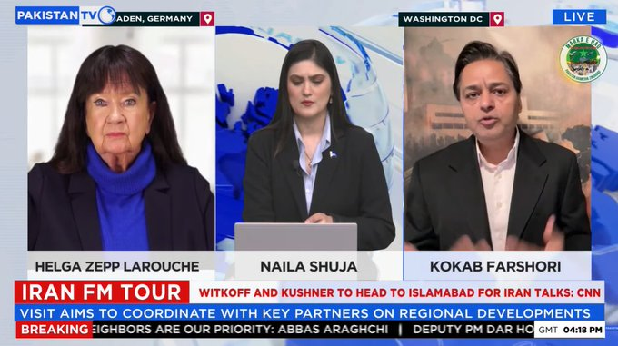
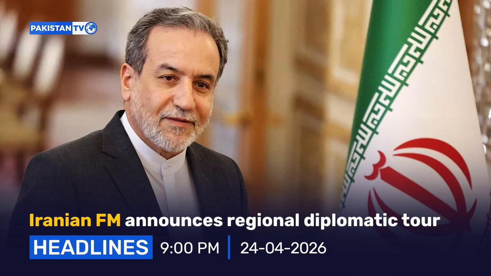
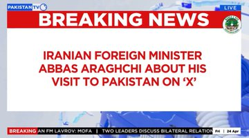
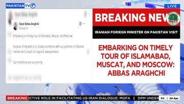
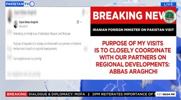
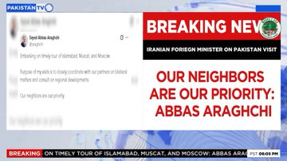
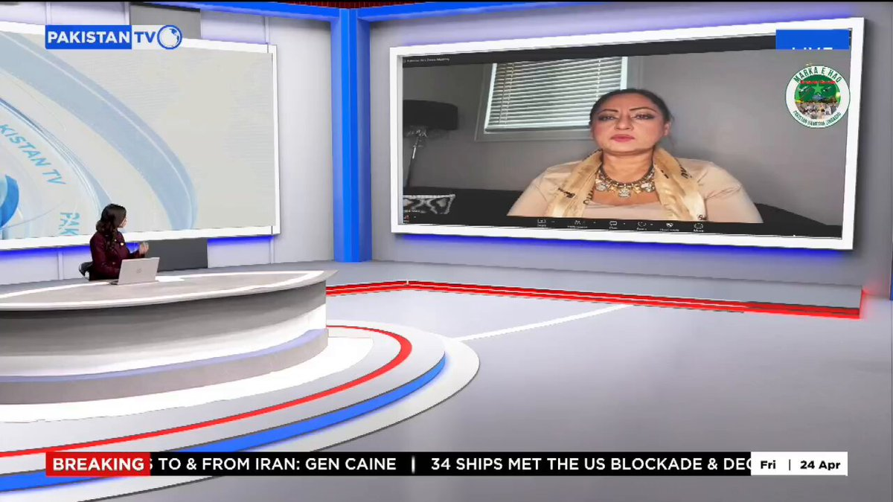

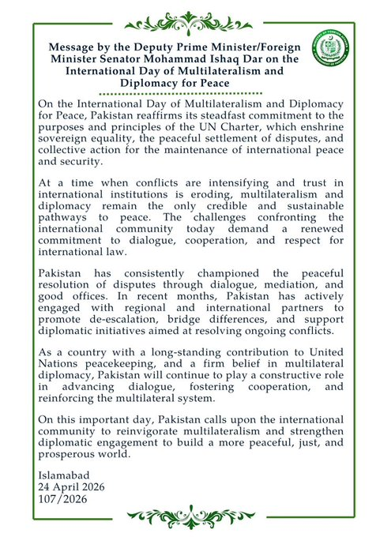
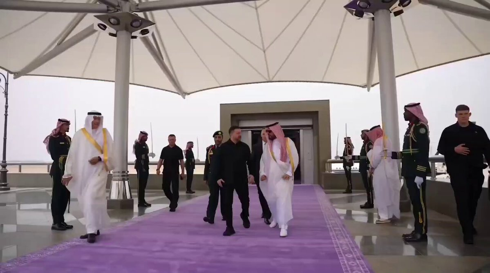


暂无文章。